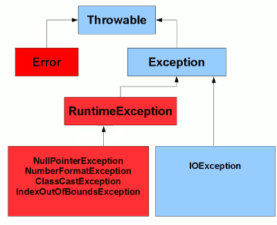

Yes. Java is a platform independent language. We can write java code on one platform and run it on another platform. For e.g. we can write and compile the java code on windows and can run it on Linux or any other supported platform. This is one of the main features of java.
Class is nothing but a template that describes the data and behavior associated with instances of that class.
Access Modifiers are the keywords in java by which we can set the level of access for class, methods, variables and constructors. There are 4 different access modifiers available in java.
Public: The public access modifier is accessible everywhere.
Private: The private access modifier is accessible only within class. We cannot access it from other classes or sub classes of even same package.
Protected: protected methods can be accessed from classes of same package or sub classes of that class.
No Access Modifier or Default Access Modifier: If you don't use any modifier, it is treated as default access modifier. The default modifier is accessible only within package.
The following table shows the access to members permitted by each modifier.
| Modifier | Class | Package | Subclass | World |
|---|---|---|---|---|
| Public | Y | Y | Y | Y |
| Protected | Y | Y | Y | N |
| No Modifier | Y | Y | N | N |
| Private | Y | N | N | N |
In java all variables which are declared inside a block, a method or a constructor are called local variables. Local variables must be initialized before using them.
Example:
public class Test{
public void myAge(){
int age=0;
age=age + 20;
System.out.println("My age is: " + age);
}
public static void main(String args[]){
Test test=new Test();
test.myAge();
}
}
In the above example, age is a local variable. This is declared inside myAge() method and its scope is limited to this method only.
In java, variables which are declared at class level outside a method or constructor or any block are called instance variables. Instance variables need not to initialize before using them, instance variables are automatically initialized to their default value. Each instance of a class has their own copy of instance variables.
Example:
public class Test{
int age;
public void myAge(){
age=age + 20;
System.out.println("My age is: " + age);
}
public static void main(String args[]){
Test test=new Test();
test.myAge();
}
}
In the above example, age is an instance variable, since it is declared outside myAge() method.
Static variables or Class variables are declared with the static keyword in a class, but outside a method, constructor or a block.
Static variables can be accessed by calling with the class name ClassName.VariableName.
Example:
public class Test{
static int age;
public void myAge(){
age=age + 20;
System.out.println("My age is : " + age);
}
public static void main(String args[]){
Test test=new Test();
test.myAge();
}
}
We can declare main method as private. It compiles without any errors, but in runtime, it will say main method is not public.
‘System’ is a predefined final class, ‘out’ is a Print Stream object and ‘println’ is a built-in overloaded method in the out object.
The Program will compile and will work properly.
Main method is static since Java virtual Machine can call it without creating any instance of class which contains main method.
If main method were not declared static than JVM has to create instance of main Class and since constructor can be overloaded and can have arguments there would not be any certain and consistent way for JVM to find main method in Java.
Java has several access modifiers. Any method or variable which is declared as public in Java can be accessible from outside of that class as well. So main method is public in nature. JVM can easily access and execute it.
‘Object’ class which resides in java.lang package is the base class for all classes in java; it means every class written in java extends Object class by default.
Primitive data types are predefined by the language and named by a keyword. There are eight primitive data types supported by Java. They are byte, short, char, int, long, Boolean, float and double. String is an object and not a primitive data type.
Sleep():
It is a static method on Thread class.
It makes the current thread into the "Not Runnable" state for specified amount of time. During this time, the thread keeps the lock (monitors) it has acquired.
Wait():
It is a method on Object class.
It makes the current thread into the "Not Runnable" state. Wait is called on an object, not a thread. Before calling Wait() method, the object should be synchronized, means the object should be inside synchronized block. The call to Wait() releases the acquired lock.
Encapsulation is a process of binding or wrapping the data and the codes into a single entity. This keeps the data safe from outside interface and misuse. Objects allow procedures to be encapsulated with their data to reduce potential interference. One way to think about encapsulation is as a protective wrapper that prevents code and data from being arbitrarily accessed by other code defined outside the wrapper.
Polymorphism is the ability of an object to take many forms.
Polymorphism exists in three distinct forms in Java:
When a class extends more than one classes then it is called multiple inheritance. Java doesn’t support multiple inheritance whereas C++ supports it, this is one of the difference between java and C++.
An abstract class is a class which can’t be instantiated (we cannot create the object of abstract class), we can only extend such classes. It provides the generalized form that will be shared by all of its subclasses, leaving it to each subclass to fill in the details. We can achieve partial abstraction using abstract classes, to achieve full abstraction we use interfaces.
In Java destruction of object from memory is done automatically by the JVM. When there is no reference to an object, then that object is assumed to be no longer needed and the memory occupied by the object are released. This technique is called Garbage Collection. This is accomplished by the JVM.
The Garbage Collection cannot be forced explicitly. We may request JVM for garbage collection by calling System.gc() method. But This does not guarantee that JVM will perform the garbage collection.
If two or more method in a class have same name but different parameters, it is known as method overloading.
Method overloading is one of the ways through which java supports polymorphism. Method overloading can be done by changing number of arguments or by changing the data type of arguments. If two or more method have same name and same parameter list but differs in return type are not said to be overloaded method.
If subclass (child class) has the same method as declared in the parent class, it is known as method overriding in java.
In other words, If subclass provides the specific implementation of the method that has been provided by one of its parent class, it is known as method overriding.
Rules for Method Overriding:
| No | Method Overloading | Method Overriding |
|---|---|---|
| 1 | Method overloading is used to increase the readability of the program. | Method overriding is used to provide the specific implementation of the method that is already provided by its super class. |
| 2 | Method overloading is performed within class. | Method overriding occurs in two classes that have IS-A (inheritance) relationship. |
| 3 | In case of method overloading, parameter must be different. | In case of method overriding, parameter must be same. |
| 4 | Method overloading is the example of compile time polymorphism. | Method overriding is the example of run time polymorphism. |
| 5 | In java, method overloading can't be performed by changing return type of the method only. Return type can be same or different in method overloading. But you must have to change the parameter. | Return type must be same in method overriding. |
Yes, we can overload main() method as well.
No, we cannot override a static method.
No, because main is a static method.
You cannot override private or static method in Java, if you create similar method with same return type and same method arguments that's called method hiding.
List interface is a part of Java Collections API, List interface extends Collection interface provides support for ordered collections of Objects. There are three well known implementation classes for List interface i.e. ArrayList, Vector and LinkedList , all these classes provides an ordered collection of objects and support duplicate values.
Like List interface Set is another interface which is a part of Java Collections API and extends Collection interface, it does not permit duplicate values in it. The well known implementation classes for a Set interface are HashSet and TreeSet.
Like List and Set interfaces, Map is also a part of Java Collections API but it does not extend Collection interface. Map provides a key value pair of Objects and some implementation like HashMap permits null whereas some implementation like HashTable does not allows null. HashMap, TreeMap and HashTable are three well known implementation of a Map interface.
Arrays are created of fix size whereas ArrayList is dynamic in nature and can vary its length. Also the size of array cannot be incremented or decremented. But with ArrayList the size is variable.
Once the array is created elements cannot be added or deleted from it. But with ArrayList the elements can be added and deleted at runtime.
ArrayList is one dimensional but array can be multidimensional.
Array can contain objects of a single data type or class. ArrayList if not used with generic can contain objects of different classes
| No | Features | Interface | Abstract Class |
|---|---|---|---|
| 1 | Definition | Interfaces are rules (Rules because you must give an implementation to them and that you can't ignore or avoid, so that are imposed like rules) which works as a common understanding document among the various teams. | Abstract declarations are like rules to be followed and concrete implementations are like guidelines (You can use that as it is or you can ignore it by overriding and giving your own choice implementation to it). |
| 2 | Relationship | Implements several interfaces. | Extends only one abstract class. |
| 3 | Instance variables | Cannot have | Can have |
| 4 | Constructor | Cannot have | Can have |
| No | List | ArrayList |
|---|---|---|
| 1 | It is an Interface. | It is an implementation of List interface. |
| 2 | Length is fixed. You can not resize it. | Length is dynamic in nature. You can resize it. |
| 3 | Stores both primitives and Objects. | You can not store primitives in ArrayList. |
‘this’ is a keyword in Java. Which can be used inside method or constructor of class. ‘this’ works as a reference to current object whose method or constructor is being invoked. 'this' keyword can be used to refer any member of current object from within an instance method or a constructor.
final:
final is a keyword. The variable declared as final should be initialized only once and cannot be changed. Java classes declared as final cannot be extended. Methods declared as final cannot be overridden.
finally:
finally is a block. The finally block always executes when the try block exits. This ensures that the finally block is executed even if an unexpected exception occurs. But finally is useful for more than just exception handling - it allows the programmer to avoid having cleanup code accidentally bypassed by a return, continue, or break. Putting cleanup code in a finally block is always a good practice, even when no exceptions are anticipated.
finalize:
finalize is a method. The finalize() method of a Java class is useful during garbage collection. Java does automatic garbage collection and periodically reclaims memory occupied by objects that are no longer referenced by any other object. If an object utilizes a resource other than memory, such as a file or a handle to another object that uses system resources then it is important that the resource should be freed before the object is reclaimed and recycled by garbage collector. A finalizer (finalize() method) added to any class is called before the garbage collector sweeps away the object. However, in practice we should not rely on the finalize() method for short supply resources because finalize() only guarantees that it will be called during garbage collection but when will garbage collector run, it depends upon system. So, if a resource needs to be closed as soon as you are done using it, you need to close it manually. Supply a method of your own for what needs to be immediately closed after use.
JDBC is a Java API that is used to connect and execute query to the database. JDBC API uses jdbc drivers to connect to the database.
Collection is an interface whereas Collections is a class. Collection interface provides normal functionality of data structure to List, Set and Queue. But, Collections class is to sort and synchronize collection elements.
An Exception is an event, which occurs during the execution of a program, that disrupts the normal flow of the program’s instructions . When an exception occurs program processing gets terminated and doesn’t continue further. In such cases we get a system generated error message. The good thing about exceptions is that they can be handled.
Errors indicate serious problems and abnormal conditions that most applications should not try to handle. Error defines problems that are not expected to be caught under normal circumstances by our program. Few examples:
All the exceptions are subclasses of java.lang.Exception
Throwable is the base class of all exceptions in java. Throwable has two direct sub classes namely Exception and Error. These two classes creates clean separation of exception types. Exception and all its sub classes are that can be handled within the program. Error and all its sub classes are expected to be handled by the program. Error and its sub type are used by Java’s run time system to indicate problems related to run time environment like out of memory or stack overflow. For example, out of memory problem (OutOfMemoryError) cannot be fixed using program code and is not expected to be handled by the program.

Java provides specific keywords for exception handling purposes, we will look after them first and then we will write a simple program showing how to use them for exception handling.
throws keyword is used with method signature to declare the exceptions that the method might throw whereas throw keyword is used to disrupt the flow of program and handing over the exception object to runtime to handle it.
Though both of these errors are related to missing classes in the classpath, the main difference between them is their root cause. ClassNotFoundExcpetion comes when you try to load a class at runtime by using Class.forName() or loadClass() and requested class is not present in classpath for example when you try to load MySQL or Oracle driver class and their JAR is not available, while in case of NoClassDefFoundError requested class was present at compile time but not available at runtime. Sometimes due to an exception during class initialization e.g. exception from static block causes NoClassDefFoundError when a failed-to-load class was later referenced by the runtime.